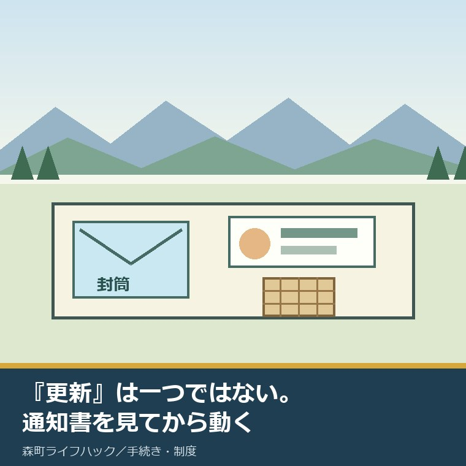
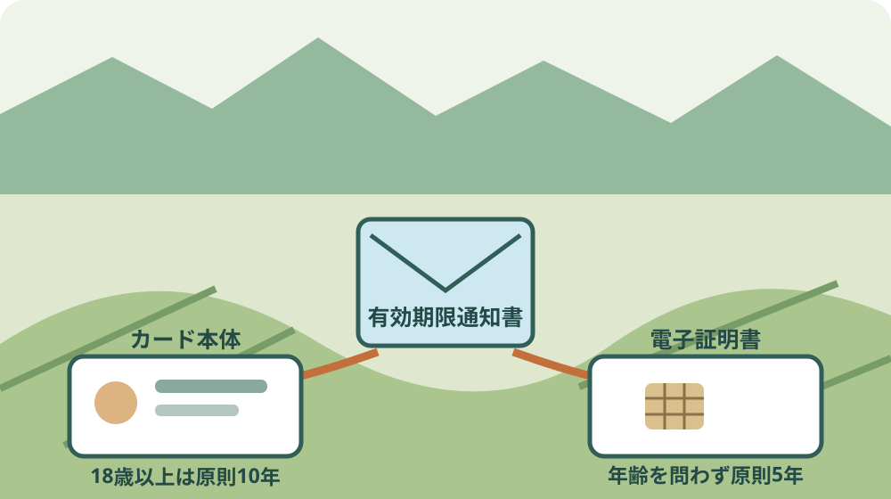
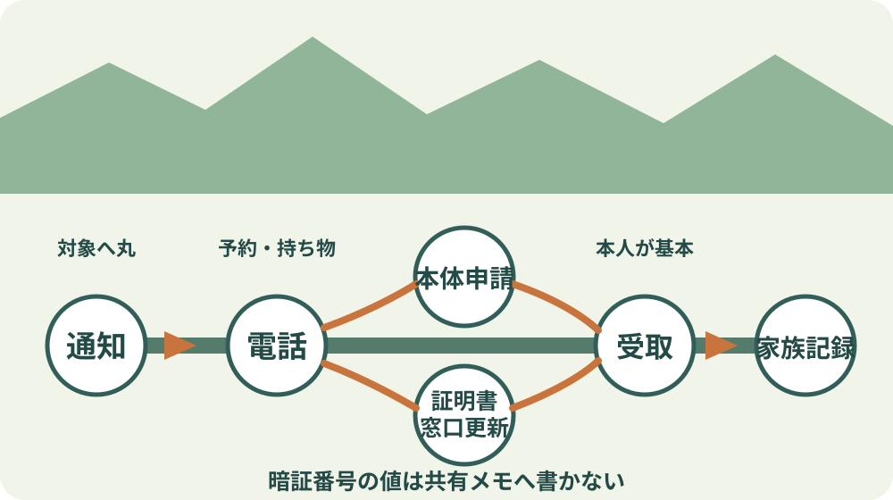

森町のマイナンバーカード更新｜10年目の手順

この記事の要点
Q. 水色の封筒に入った有効期限通知書が届きました。カード本体と電子証明書のどちらを更新しますか。
A. 通知書の「有効期限が到来するもの」を最初に見ます。カード本体なら申請後に新カードを受け取り、電子証明書だけなら現在のカードを役場で更新します。森町は2026年4月1日から役場1階ロビーに専用窓口を設けました。持ち物と予約要否は住民係へ事前確認します。
水色の封筒で有効期限通知書が届くと、「マイナンバーカードを更新してください」という一つの用事に見えます。
実際には、顔写真付きのカード本体と、ICチップ内の電子証明書は別物です。期限も手順も同じではありません。
この記事は、通知書を受け取った森町の住民と、町外から親の手続きを支えるご家族に向けた段取りの案内です。
森町の公表ページ、広報もりまち令和7年9月号、地方公共団体情報システム機構の更新案内を、2026年9月7日に照合しました。
意外なのは、題名の「10年目」が全員のすべての更新を表すわけではないことです。電子証明書は原則5年で期限を迎えます。
森町では2026年4月1日、役場1階ロビーにカード関連手続きの専用窓口が開設されました。入口が一つ見えるようになったのは前進です。
体験ストックには、私がこの窓口で更新した記録も、相談者に同行した記録もありません。来庁した、待った、説明を受けたとは書きません。
私はこう考えます。更新の最初の一歩は役場へ向かうことではなく、通知書の該当欄へ丸を付けることです。
2026年4月1日、森町役場1階に専用窓口ができた
森町の「令和8年度 同報無線による町長からのお知らせ」は、2026年9月1日更新のページです。
専用窓口の案内は、その中の2026年5月のお知らせに載っています。ページ更新日と窓口の開設日を混同しません。
公表内容によると、窓口は2026年4月1日から森町役場1階ロビーに設けられました。
扱うのはマイナンバーカード、電子証明書の更新、そのほかの関連手続きです。
カード申請では申請書作成システムを使い、写真撮影から受取案内まで専用窓口で進められると説明されています。
「受取案内まで」は、新しいカードを申請当日に受け取れるという意味ではありません。申請と交付は時間を分けて考えます。
町は、来庁者の増加への対応、混雑の緩和、申請書を書く負担の軽減を開設理由に挙げています。
公表資料で確認できる範囲では、専用窓口はカードと電子証明書の更新、そのほかの関連手続き、カードの申請支援を扱います。
ここからは私の意見です。来庁者の用件を同じ入口で確かめる職員の負担も、軽く見てはいけないと考えます。
役場全体の開庁時間は平日の8時30分から17時15分です。ただし、専用窓口固有の最終受付や昼の扱いは公表ページで確認できません。
住民生活課住民係の電話は0538-85-6312です。来庁時刻を決める前に、通知書の対象と予約要否を伝えます。

最初に通知書の「有効期限が到来するもの」を見る
地方公共団体情報システム機構は、有効期限の2〜3か月前を目安に通知書を送ると案内しています。
通知書には「有効期限が到来するもの」という欄があります。カード本体、電子証明書、両方のどれかを確認します。
カード表面の年月日だけを見て、手続き全体を決めない方が安全です。電子証明書の期限はカード表面と一致しない場合があります。
更新できるのは、有効期限まで3か月未満になった日からです。通知書をなくしたことだけで、更新不能になるわけではありません。
通知書が見当たらない場合は、カード本体の有効期限、本人の生年月日、手元にあるカードを住民係へ伝えます。
家族が支えるときは、通知書の表面全体を無造作に共有しません。必要な欄だけを一緒に読み、個人番号や暗証番号をメッセージで送り合わないようにします。
森町の住民票で「何を載せるか」を先に決める記事も、必要な個人情報だけを扱うという同じ順序で読めます。
| 通知書の対象 | 期限の基本 | 行うこと | 当日の中心物 |
|---|---|---|---|
| カード本体 | 発行時18歳以上は10回目の誕生日 | 新カードを申請し、後日受け取る | 交付通知書、旧カード、本人確認書類 |
| 電子証明書 | 年齢を問わず5回目の誕生日 | 現カードのICチップへ書き込む | 現カード、暗証番号の確認 |
| 両方 | 通知書に記載 | 本体の申請と受取を軸に窓口へ確認 | 通知書一式と現カード |
10年目はカード本体、5年目は電子証明書が基本
カード本体の有効期限は、発行時に18歳以上だった人なら発行日から10回目の誕生日までです。
発行時18歳未満だった人は5回目の誕生日までです。「カードは全員10年」と覚えると外れます。
年齢基準の変更前に申請したカードには経過上の違いがあります。手元の通知書を個別の答えとして扱います。
電子証明書は、年齢を問わず発行日から5回目の誕生日までが基本です。
電子証明書はオンライン上で本人であることを示す機能で、顔写真付きカードそのものではありません。
カードを10年使える人でも、その間に電子証明書の更新が一度入ります。このずれが「まだカードは使えるのに通知が来た」という迷いを生みます。
題名に10年目と置きましたが、これは発行時18歳以上のカード本体を指す基本形です。通知書が電子証明書だけなら、行うのは5年目の更新です。
カード本体の更新は申請と受取の二段階
カード本体を更新するときは、新しい顔写真付きカードを申請します。現在のカードに期限だけを書き足す手続きではありません。
申請方法は、スマートフォンまたはパソコン、写真を貼る郵送、対応する証明写真機、森町役場での撮影という四つが案内されています。
有効期限通知書に申請書IDがあれば、オンライン申請の入力に使います。IDがない場合は、役場へ確認します。
役場の専用窓口では写真撮影から案内を受けられます。自宅で撮影環境を用意しにくい人には実務上の助けです。
広報もりまち令和7年9月号では、申請から約1か月後に交付通知書が届く流れを示しています。必ず30日以内という約束ではありません。
受取時は、交付通知書、現在のマイナンバーカード、本人確認書類を用意します。以前と同じ暗証番号を使うなら、本人だけが見られる控えも確認します。
受取は原則本人です。仕事の休みを一日だけ取れば終わると決めず、申請方法と後日の受取を分けて予定へ入れます。
通常の有効期限更新は無料です。紛失を伴う再交付まで、すべて無料だと広げないようにします。
森町のマイナンバーカード申請と出張申請の記事は、初回申請や役場へ行きにくい場合の入口です。期限到来による更新とは分けて読みます。
電子証明書の更新は現在のカードへ書き込む
電子証明書だけが期限を迎える場合、新しい顔写真付きカードを作るのではありません。
現在のカードを役場へ持参し、ICチップ内へ新しい電子証明書を書き込みます。オンラインだけでは更新できません。
有効期限通知書がなくても手続きできると案内されています。顔写真も不要です。
暗証番号が分かると窓口での確認が進みやすくなります。署名用は英数字6〜16桁、利用者証明用は数字4桁です。
二つを同じ暗証番号だと思い込まないようにします。署名用と利用者証明用は役割も文字数も違います。
暗証番号を忘れた場合は窓口で再設定できます。ただし、代理人が持参した回答書の暗証番号と一致しないと即日更新できない場合があります。
顔認証マイナンバーカードなど個別の設定では扱いが変わります。通知書とカードの状態を住民係へ伝えます。
期限切れで止まる機能を分けて考える
カード本体の期限が切れると、顔写真付きの本人確認書類として使えなくなります。
電子証明書だけが切れ、カード本体が有効なら、対面の本人確認書類としてのカードまで同時に無効になるわけではありません。
一方、電子証明書が切れると、マイナポータル、コンビニ交付、e-Taxなど電子証明書を使う機能が止まります。
広報もりまち令和7年9月号は、電子証明書の期限後もマイナ保険証を3か月間利用でき、その後は未更新なら利用できなくなると案内しています。
受診日に読み取りできることを個別に保証する記述ではありません。保険資格の書類と受診先の案内も確認します。
スマートフォンへ搭載した電子証明書も、カード側の電子証明書の失効に連動して失効します。スマートフォン側だけ残るとは考えません。
「何に使えなくなると困るか」を家族で一つ選ぶと、更新日を決めやすくなります。通院、確定申告、証明書取得の順で予定表を見ます。
家族の移動は一回で終わるとは限らない
森町役場へ行く負担は、同じ町内でも自宅の場所、車の利用、勤務時間、付き添いの有無で変わります。
カード本体は自宅から申請できても、受取は原則本人の来庁が残ります。電子証明書だけなら、現在のカードを持つ窓口手続きが中心です。
町外の家族が親を支える場合は、誰が通知書を読み、誰が電話し、誰が送迎するかを分けます。全部を一人に集めない方が続きます。
電話では、通知書の対象、本人の来庁可否、希望日、持ち物、予約要否、代理の場合の書類を順に聞きます。
専用窓口の待ち時間や曜日別の混雑は公表されていません。早い曜日や遅い時刻を推測で勧めません。
森町への転入届とカードの住所変更を整理した記事では、転入時の継続利用を扱っています。引っ越しの変更と有効期限更新は別の用事です。
良い点：写真撮影から受取案内まで同じ入口で聞ける
良い点の一つ目は、役場1階ロビーという見つけやすい場所に、カード関連の専用入口を設けたことです。
二つ目は、申請書作成システムを導入し、申請書を書く負担を減らそうとしていることです。
三つ目は、カード申請の写真撮影から受取案内までを同じ窓口で聞けることです。
四つ目は、電子証明書だけなら現在のカードを使い続け、ICチップ内の機能を更新できることです。
五つ目は、通常の期限更新に手数料がかからないことです。費用の心配を一つ減らせます。
町の職員が来庁者の増加に対応しながら、カードと電子証明書の更新やカード申請支援を受ける負担は先に認めたいと思います。
住民側にも、通知書の保管、本人の移動、受取、暗証番号の管理があります。専用窓口は、その負担をなくすのではなく、迷う入口を狭める仕組みです。
注文したい点：予約要否と受付終了時刻を明示してほしい
その上で、専用窓口の案内には足りない項目があります。予約要否、専用窓口の最終受付、昼の扱いがページから分かりません。
役場全体が17時15分まででも、機器を使う更新を17時14分から受けられるとは限りません。住民側は電話確認を一つ増やすことになります。
カード本体の申請支援と電子証明書の書込みが、同じ日にどこまで進むかも、対象別に一枚で示してほしいところです。
カード本体と電子証明書を同じ「更新」でひとまとめにしたままでは、専用窓口があっても家族は動けません。制度が立派でも、使う人が動けなければ意味がない。私はそう考えます。
専用窓口ができたと知ると、私は予約なしで行けるのだろうと読みたくなります。しかし、一次情報に記載がない以上、予約不要とは言い切れません。
待ち時間が短くなったとも断定できません。町が目指す混雑緩和と、ある日の実際の待ち時間は別の事実です。
対象別に「持つ物」「来る人」「一日で終わる範囲」「先に電話が要る場合」を四列で出せば、住民と窓口の双方の負担を減らせると考えます。

代理手続きは来庁困難の理由と書類を先に確認する
カード本体の受取は原則本人です。家族だから自由に代わりに受け取れるという仕組みではありません。
病気、身体の障がいなど、本人の来庁が難しいと認められる事情がある場合は代理受取の余地があります。
来庁困難に当たるか、何を証明に使えるかは、事情と書類によって変わります。森町の住民係へ先に相談します。
電子証明書の代理更新では、本人が照会書兼回答書を書き、封筒へ入れて封をする方法が案内されています。
本人のカード、代理人の顔写真付き本人確認書類なども要ります。回答書を家族が代筆してよいとは決めません。
暗証番号が一致しないと、その場で完了しない場合があります。本人へ電話すれば口頭で暗証番号を伝えられる、とは考えないでください。
代理を考えた時点で、カード本体の受取か電子証明書の更新かを住民係へ伝えます。二つを混ぜると必要書類の答えもずれます。
対案・結論：今日、通知書の該当欄へ丸を付ける
今日できる小さな一歩は、水色の封筒に入った有効期限通知書を開き、「有効期限が到来するもの」の欄へ鉛筆で丸を付けることです。
カード本体なら、申請方法と後日の受取担当を二行に分けます。電子証明書なら、現在のカードと暗証番号の種類を確認します。
両方と書かれていたら、自分で一つに決めません。住民係へ通知書どおりに伝え、申請と受取の順を聞きます。
本人が動けるなら来庁候補日を一つ書きます。動きにくいなら、代理要件を聞く家族と電話する日を決めます。
電話番号0538-85-6312、本人の氏名、生年月日、通知書の対象、期限、来庁可否を一枚に置きます。
暗証番号そのものは家族共有メモへ書きません。「4桁を本人が確認」「英数字を本人が確認」という作業だけを記録します。
今日中に更新を終える必要はありません。どの更新かが一つ決まれば、次の移動と持ち物が決まります。
家族に残す記録は期限・暗証番号の種類・連絡先
家族の記録には、カードの表面にある有効期限と、通知書に書かれた更新対象を別々に写します。
電子証明書の期限はカード表面から分からない場合があります。通知書を保管した場所と確認日を残します。
暗証番号は値を書かず、署名用の英数字6〜16桁と、利用者証明用の数字4桁があることだけを記録します。
申請日、交付通知書が届いた日、受取予約の有無、受取日を別の欄にします。約1か月という目安を締切に置き換えません。
代理を使う場合は、来庁困難の理由を証明する書類、回答書を本人が記入した日、封をした状態を記録します。
住民係へ電話した日、担当から案内された持ち物、最終受付の時刻も書きます。ウェブにない答えは回答日とセットにします。
カード番号、個人番号、暗証番号の値、回答書の中身を家族の共有チャットへ貼らないことも、記録の決まりに含めます。
大石の視点：制度名より、誰が何回動くかを先に書く
大石浩之（磐田市／不動産業）として、森町が役場1階に専用窓口を置いた判断は良いと考えます。
住民はカード本体、電子証明書、暗証番号、保険証利用という似た言葉を持って来庁します。
専用窓口で用件を確かめる職員の仕事は軽くないと、私は考えます。
町の人も、平日の移動、本人確認書類の準備、写真、後日の受取、家族の付き添いという負担をすでに払っています。
その努力を認めた上で、打開が要るのは移動と担い手です。本人一人と窓口職員一人の頑張りだけでは、更新が重なる時期を回し続けられません。
私には窓口利用の体験がありません。ここからは、家族の段取りを組む事業者としての意見です。
制度名を詳しく説明する前に、「誰が通知書を読むか」「誰が何回動くか」「受取まで何を保管するか」を書くべきです。
カード本体なら申請と受取、電子証明書なら現カードを持つ窓口更新。この二行が見えれば、家族は休みと送迎を決められます。
今日の成果は更新完了だけではありません。通知書の対象を一つ確認し、住民係へ聞く質問を一行にしたことも前進です。
まとめ：通知書の分岐を一つ決めてから窓口へ
発行時18歳以上のカード本体は原則10回目の誕生日、電子証明書は年齢を問わず原則5回目の誕生日が期限です。
森町は2026年4月1日から役場1階ロビーに専用窓口を設けましたが、予約要否と固有の受付終了時刻は公表ページで確認できません。
カード本体なら申請後に新カードを受け取り、電子証明書だけなら現在のカードを窓口で更新します。
水色の封筒に入った通知書の該当欄へ丸を付け、本人の来庁可否と持ち物を住民係へ確認する。今日の一歩はそこまでで十分です。
よくある質問
Q1. 森町のマイナンバーカード更新は予約が必要ですか。
A1. 森町が2026年9月1日に更新した案内と広報では、役場1階ロビーの専用窓口について予約要否を確認できません。予約不要とは決めず、来庁日、対象がカード本体か電子証明書か、本人または代理人かを住民生活課住民係0538-85-6312へ伝えて確認してください。
Q2. カード本体と電子証明書の更新は何が違いますか。
A2. 発行時18歳以上のカード本体は原則10回目の誕生日までで、申請後に新しいカードを受け取ります。電子証明書は年齢を問わず原則5回目の誕生日までで、現在のカードを役場へ持参し、ICチップ内へ新しい電子証明書を書き込みます。
Q3. 本人が役場へ行けない場合、家族が代理で更新できますか。
A3. カード受取は原則本人ですが、病気や身体の障がいなどで来庁困難と認められる場合は代理受取の余地があります。電子証明書は照会書兼回答書を本人が記入して封入・封かんする方法があります。理由と必要書類の確認が要るため、家族だけで来庁する前に森町住民係へ連絡してください。
参考にした公式情報
- 令和8年度 同報無線による町長からのお知らせ／静岡県森町（2026年9月1日更新。2026年4月1日の専用窓口開設、場所、対象、申請支援、開設目的を2026年9月7日に確認）
- 広報もりまち令和7年9月号／静岡県森町（4〜5頁。カード本体と電子証明書の期限、申請、受取、持ち物、期限切れの影響を2026年9月7日に確認）
- 更新手続きについて／地方公共団体情報システム機構（更新可能時期、通常更新の手数料、代理手続き、暗証番号を2026年9月7日に確認）

磐田市で小さな不動産業を営みながら、森町の空き家・農地・実家じまいの相談を受けています。地域と不動産実務をつなぐ目線で確認の順番を書きます。
最終確認日：2026-09-07 ／ 専用窓口固有の予約要否、最終受付、昼の扱い、待ち時間、カード本体の正確な交付日、個別の代理可否は公開資料で確認できていません。来庁前に森町住民生活課住民係へ確認してください。